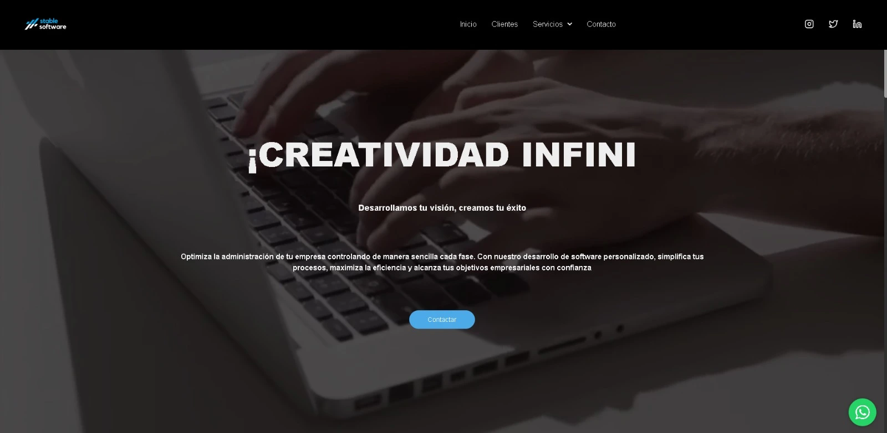
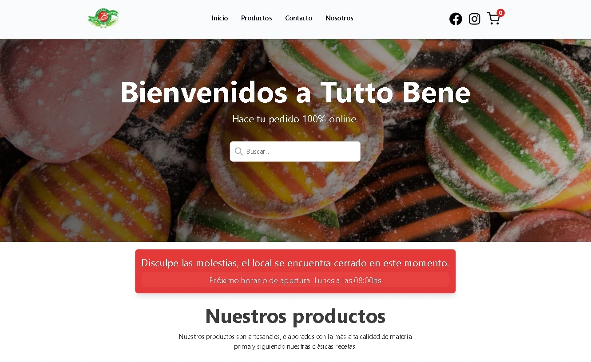

<section class="w-full ">
  <div class="max-w-screen-xl mx-auto ">
    <h2 class="text-2xl md:text-6xl font-bold  text-center text-[#f2e8e2] mb-8">Proyectos realizados</h2>
    <div class="grid grid-cols-2 ml-1 mr-1 md:grid-cols-2 lg:grid-cols-3 gap-8 ">
      <a href="https://stable.com.ar" target="_blank" class="hover:-translate-y-1 hover:scale-110  duration-300 p-2 rounded-lg text-center ">
        <h3 class="text-xl font-semibold text-white mb-2">Web Stable software</h3>
        <div class="flex justify-center ">
          
        </div>
        <p class="text-white pt-2">
          En este proyecto desarrolle Font end utilizando Angular16, Tailwincss, TypeScript. También maquete el diseño, redacte los textos y cree imagenes para los banners.
        </p>
      </a>
      <a href="https://www.brilloextremovm.com" target="_blank" class=" p-2 rounded-lg  transition   text-center hover:-translate-y-1 hover:scale-110  duration-300">
        <h3 class="text-xl font-semibold text-white ">E-commerce Brillo extremo</h3>\

        <div class="flex justify-center ">
          
        </div>
        <p class="text-white pt-2">
          En este proyecto desarrolle Font end creando un carrito de compras con microservicios utilizando Angular16, Tailwincss, TypeScript.
          Implementación y trabajo en conjunto con el backend para consumir y enviar datos.
          También implemente y mejore Seo, performance y accesibilidad.
        </p>
      </a>
      <a href="https://fronttuttobene.web.app" target="_blank"  class="p-2 rounded-lg  transition  text-center hover:-translate-y-1 hover:scale-110  duration-300">
        <h3 class="text-xl font-semibold text-white mb-2">E-commerce Tutto bene</h3>
        <div class="flex justify-center">
          
        </div>
        <p class="text-white pt-2">
          En este proyecto desarrolle Font end con Angular16, Tailwincss, TypeScript, creando un carrito de compras con distintas variaciones, tambien desarrolle alertas utilizando microservicios
          e implemente socket para el cambio de estados en los pedidos.
          Implementación y trabajo en conjunto con el backend para consumir y enviar datos.
          También implemente y mejore Seo, performance y accesibilidad.
        </p>
      </a>
    </div>
  </div>
</section>
